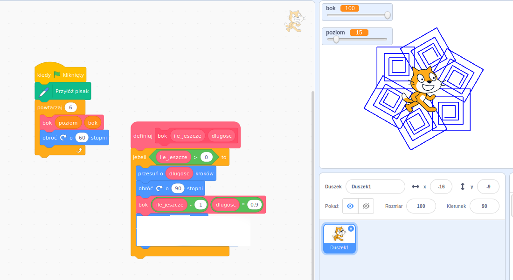
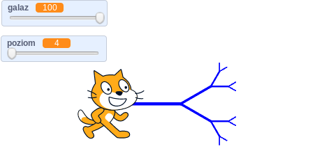
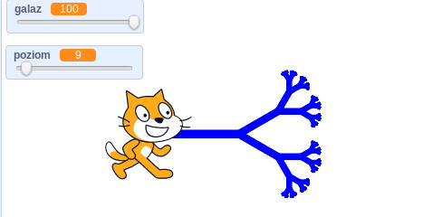

Fraktale
NaCoBeZu
- Rekurencja
- Fraktal
-
Narzędzia w Scratchu.
- Własne bloki
- Parametry
Powtórka ze scratcha
W ramach przypomnienia jak działa Scatch, wykonamy proste zadanie. Zmodyfikuj program tak by w wyniku naciśięcia flagi otrzymać następujący efekt. Aby spirala mogła zostać powtórzona wielokrotnie, duszek musi wrócić na miejsce z którego rozpoczął działanie. Uzupełnij brakujące bloki w pustym miejscu.

Fraktale
Rekurencja odwoływanie się np. funkcji lub definicji do samej siebie. Rekurencyjna jest np. definicja potęgi
Fraktal to obiekt którego części są podobne do całośc
Fraktalem, który dzisiaj stworzymy będzie drzewo binarne.


Jeżeli uda Ci się skończyć powyższe zadanie, spróbuj zmodyfikować program, tak by drzewo było mniej regularne - wprowadź element losowy w długości gałęzi. Jeżeli uda Ci się i to, spróbuj dodać liście na końcach drzewa.